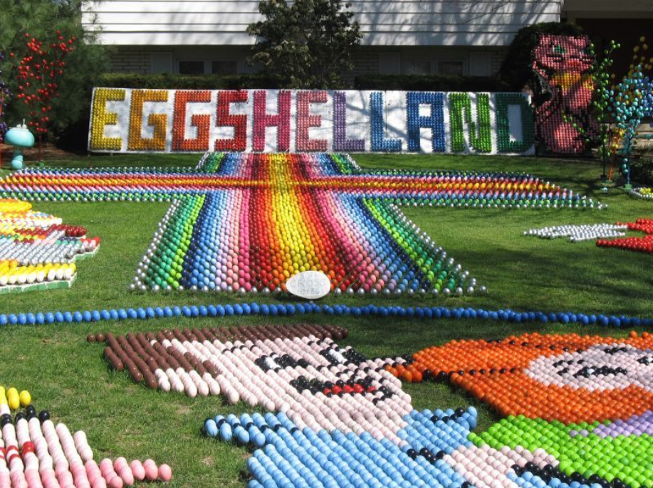
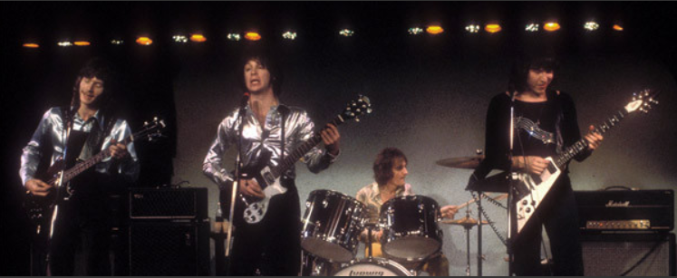

Checkpoint 2: Lyndhurst

The town of Lyndhurst is the next stop on this route. Though incorporated as a part of Euclid, OH, it was
remaned to Lyndhurst in 1920 and officially incorporated as its own city in 1950 (information courtesy of
Encyclopedia of Cleveland History). Additionally, Lyndhurst
features "Eggshellland," a mosaic made of thousands of hand-painted eggs near easter (information and image courtesy of
Atlas Obscura). We can see one of these beautiful displays on the left,
this particular displaying several large characters at the bottom, as well as what may be a rainbow colored cross, and the name of the
display spelled out at the top.

In addition, singer/songwriter/guitarist for the group "The Raspberries," Eric Carmen (center), is originally from Lyndhurst.
Above, we see the group during a live performance (image courtesy of
Discogs). While not the most popular group ever, the Raspberries had an extremely respectable career, releasing several studio albums which all
achieved decent success. In addition, Carmen had a successful solo career, with his steady stream of singles and albums. In fact, his frist
album, simply titled Eric Carmen, hit #21 on the Billboard top 200, and both that album and the single All By Myself
were certified gold in the mid to late 70's (information courtesy of Billboard
and RIAA).
To further explore Lyndhurst, click here.
Pedaling for Parkinson's does not claim any affiliation with Google Street View.